บทสรุปความทรงจำ
ขอให้แสงโคมนำทางความฝัน และความสุขของคุณให้สว่างไสวตลอดไป ขอบคุณที่ร่วมเดินทางผ่านหน้ากระดาษแห่งประวัติศาสตร์นี้...
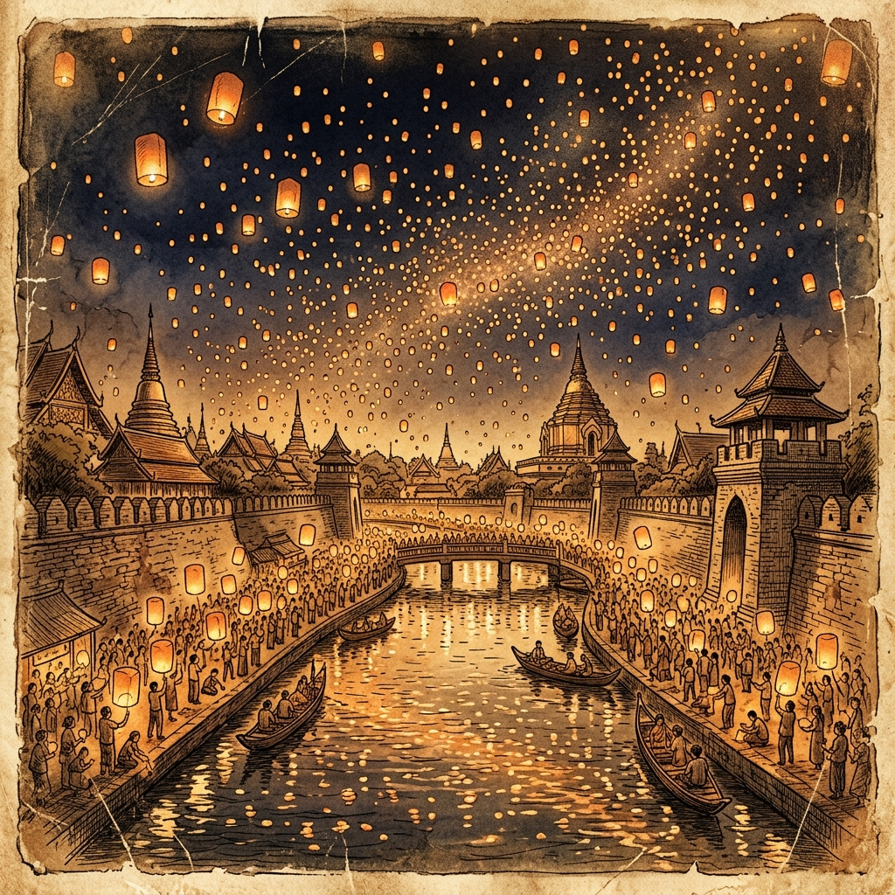
เชียงใหม่ · ล้านนา
Night of a Thousand Lights
เลื่อนลงเพื่อเริ่ม

The Festival
คำว่า "ยี่" แปลว่า สอง และ "เป็ง" แปลว่า เพ็ญ หรือคืนพระจันทร์เต็มดวง รวมกันหมายถึงประเพณีในวันเพ็ญเดือนสองของชาวล้านนา
ในภาษาคำเมืองเรียกว่า "ป๋าเวณียี่เป็ง" ซึ่งเป็นมรดกทางวัฒนธรรมที่สืบทอดมายาวนานกว่า 700 ปี ในคืนนี้ทั่วทั้งเชียงใหม่จะถูกเนรมิตให้สว่างไสวด้วยแสงไฟจากโคมนับหมื่นดวง
ขอให้แสงโคมนำทางความฝัน และความสุขของคุณให้สว่างไสวตลอดไป ขอบคุณที่ร่วมเดินทางผ่านหน้ากระดาษแห่งประวัติศาสตร์นี้...

การประดิษฐ์โคมและกระทงด้วยมือ เป็นการฝึกสมาธิและความประณีตที่ส่งต่อจากรุ่นสู่รุ่น...
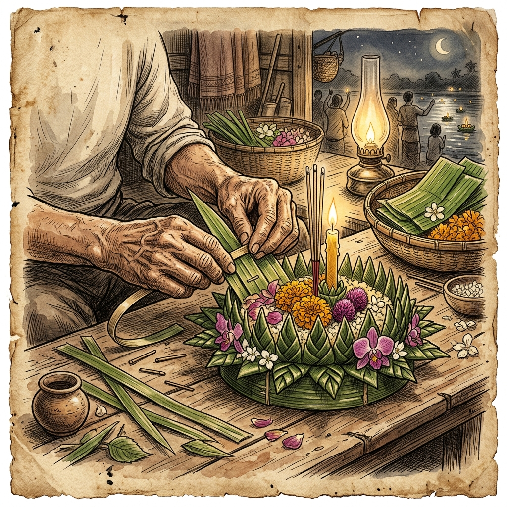
หน้าถัดไป →
เทศกาลนี้เป็นช่วงเวลาที่ครอบครัวมารวมตัวกัน และต้อนรับผู้มาเยือนด้วยรอยยิ้มที่เป็นเอกลักษณ์...
← กลับ
ในปัจจุบัน ยี่เป็งเชียงใหม่ได้กลายเป็นเทศกาลระดับโลกที่ดึงดูดผู้คนให้มาสัมผัสเสน่ห์ด้วยตาตนเอง...
หน้าถัดไป →
นอกจากโคมไฟแล้ว อาหารล้านนาอย่าง ข้าวซอย และแกงฮังเล ก็เป็นส่วนสำคัญของการเฉลิมฉลอง...
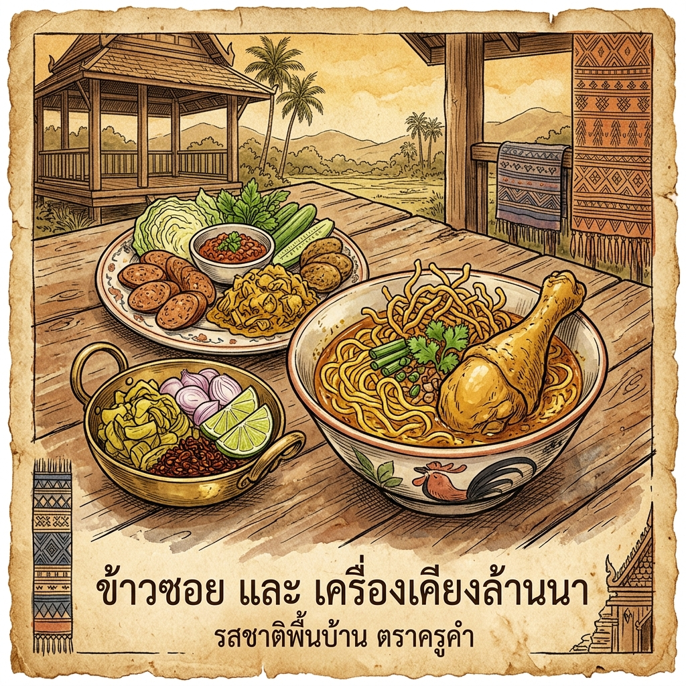
← กลับ
คำว่า "ยี่" หมายถึงสอง และ "เป็ง" คือเพ็ญ ยี่เป็งจึงตรงกับวันเพ็ญเดือนสองตามปฏิทินล้านนา ซึ่งเป็นช่วงเวลาที่ลมหนาวเริ่มพัดผ่านและท้องฟ้าสดใส...
หน้าถัดไป →
การปล่อยโคมคือการส่งแสงไฟไปบูชาพระเกศแก้วจุฬามณีบนสวรรค์ชั้นดาวดึงส์ และเป็นการปล่อยวางทุกข์โศกให้ลอยไปกับสายลมเพื่อเริ่มต้นสิ่งใหม่...
← กลับ
บันทึกเรื่องราวความรุ่งเรืองของอาณาจักรล้านนา ที่สืบทอดผ่านแสงไฟและศรัทธามานานกว่า 7 ศตวรรษ...
เปิดบันทึก →
Sky Lanterns
โคมแต่ละดวงคือคำอธิษฐานที่ถูกส่งผ่านกระดาษสาบางเบา การปล่อยโคมลอยเป็นสัญลักษณ์ของการปล่อยวางความทุกข์ โรคภัย และสิ่งไม่ดีในชีวิตให้ลอยไปกับสายลม เพื่อเปิดรับสิ่งดีงามและความเป็นสิริมงคลเข้ามาในชีวิต
ร่วมทำความรู้จักโคมล้านนาทั้ง 4 ประเภท ไม่ว่าจะเป็นโคมแขวนเพื่อบูชาพระรัตนตรัย โคมผัดที่เล่าเรื่องวัฏสงสาร หรือโคมถือในขบวนแห่ พร้อมศึกษาขั้นตอนการทำโคม (DIY) แบบดั้งเดิมที่ใส่ใจในทุกรายละเอียด

Traditions
ยี่เป็งไม่ใช่แค่การปล่อยโคม แต่คือการเชื่อมโยงระหว่างผู้คน ธรรมชาติ และสิ่งเหนือธรรมชาติ ผ่านความเชื่อที่ว่าแสงโคมจะถูกส่งไปบูชาพระเกศแก้วจุฬามณีบนสวรรค์ชั้นดาวดึงส์
พบกับความแตกต่างที่น่าสนใจระหว่าง "ยี่เป็งล้านนา" และ "ลอยกระทงภาคกลาง" รวมถึงการแต่งกายด้วยชุดพื้นเมืองล้านนาอันเป็นเอกลักษณ์ ที่ช่วยส่งเสริมบรรยากาศของเทศกาลให้มีความงดงามและทรงคุณค่าทางจิตใจ
ปฏิทินและสถานที่
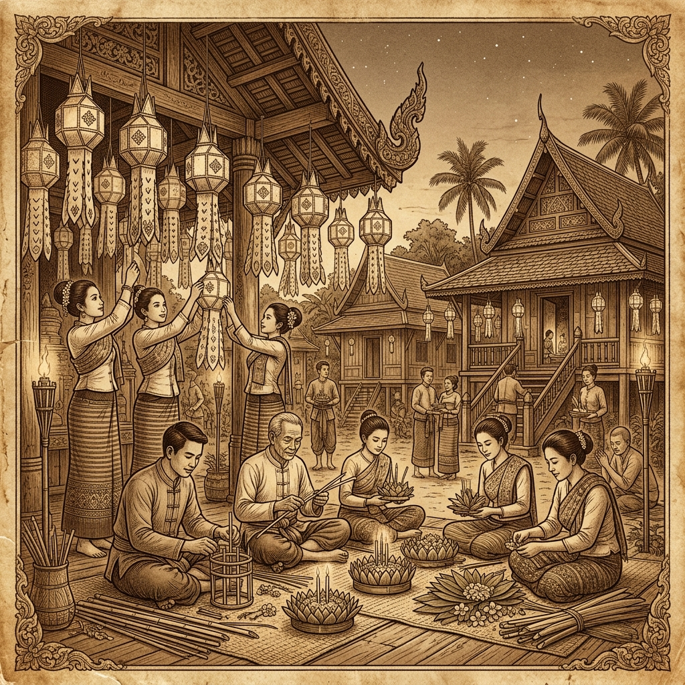
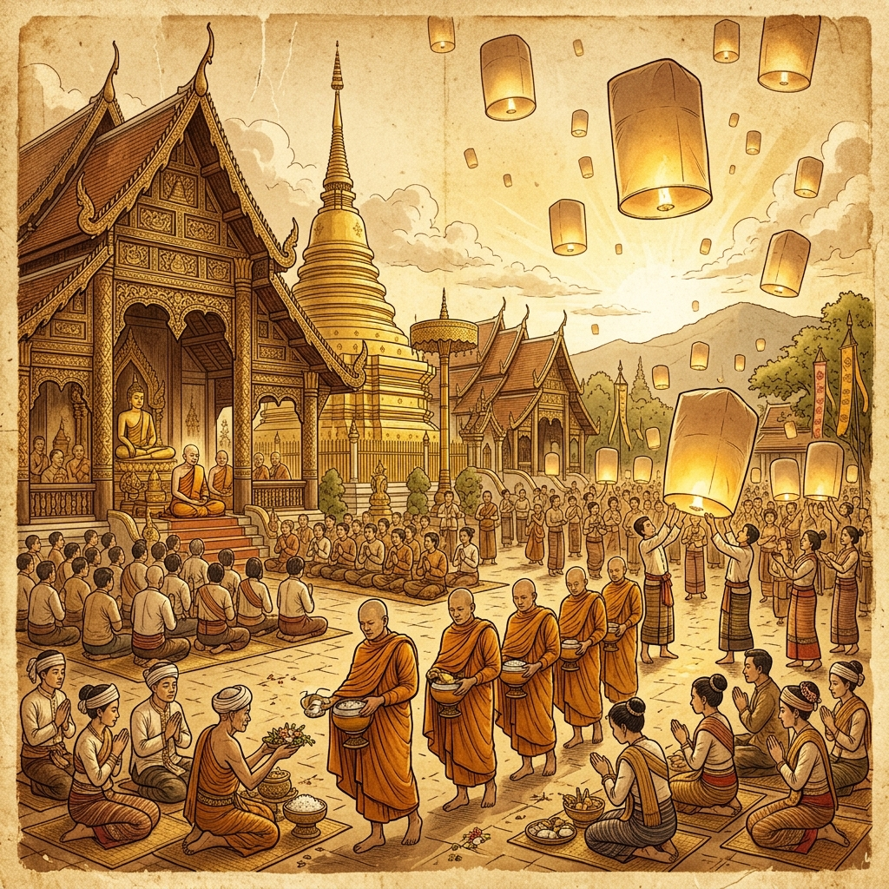

กิจกรรมหลักในงาน
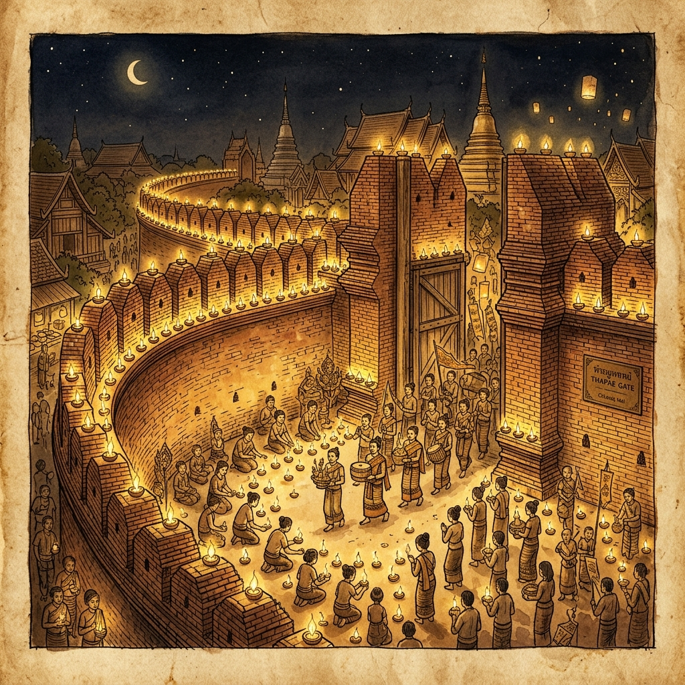
"ต๋ามผางประทีป" การจุดตะเกียงดินเผาถวายเป็นพุทธบูชา แสงไฟสว่างไสวทั่วกำแพงเมืองและวัดวาอาราม เพื่อความเป็นสิริมงคลและแสงสว่างแห่งปัญญา
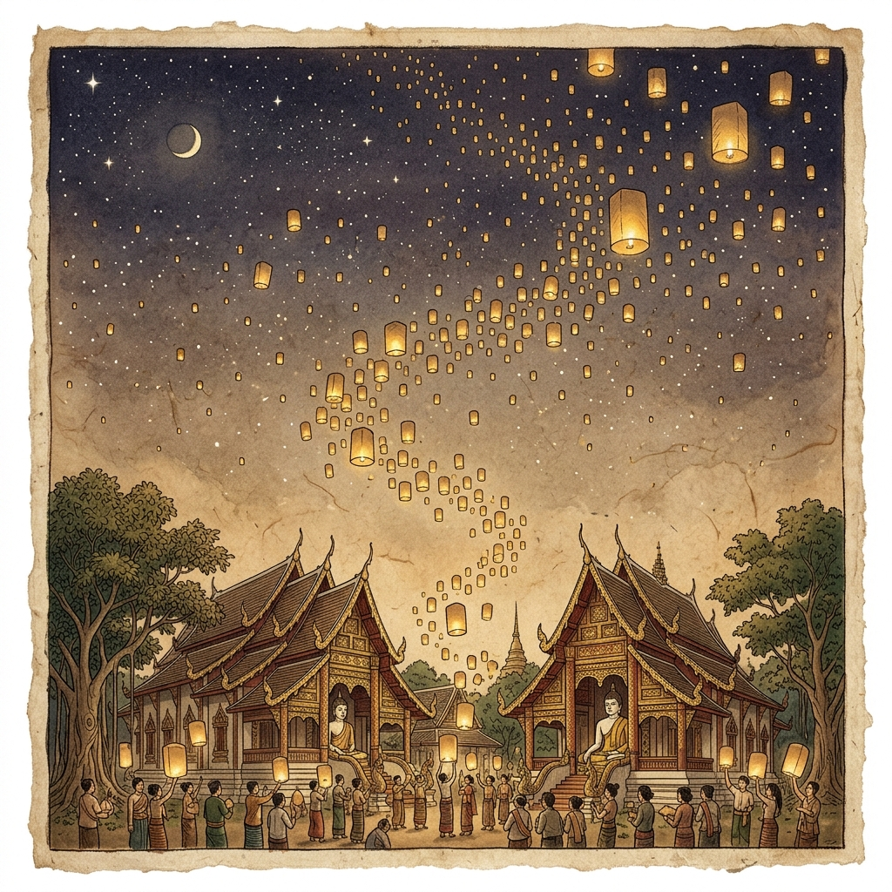
"โคมลอย" หรือโคมไฟที่ลอยขึ้นสู่ท้องฟ้า เป็นสัญลักษณ์ของการปล่อยวางทุกข์โศก โรคภัย และส่งคำอธิษฐานไปสู่สรวงสวรรค์ในคืนเดือนเพ็ญ
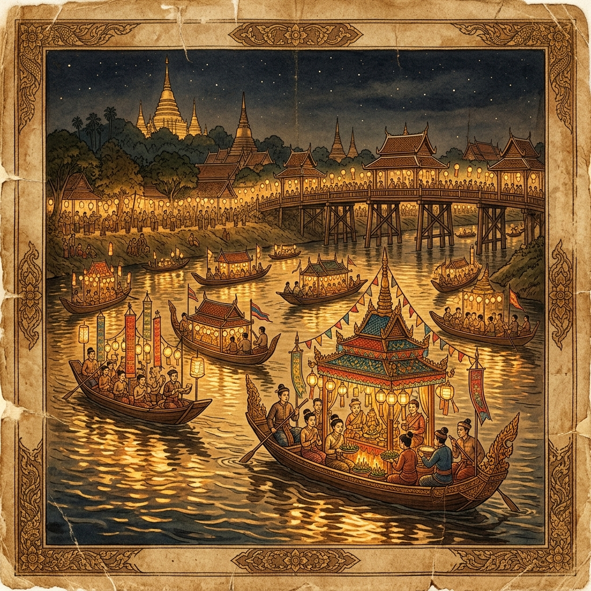
"ลอยสะเปา" คือการลอยกระทงในแม่น้ำปิง เพื่อขอขมาพระแม่คงคาและระลึกถึงบรรพบุรุษท่ามกลางสายน้ำที่เต็มไปด้วยแสงไฟสะท้อนเงาจันทร์
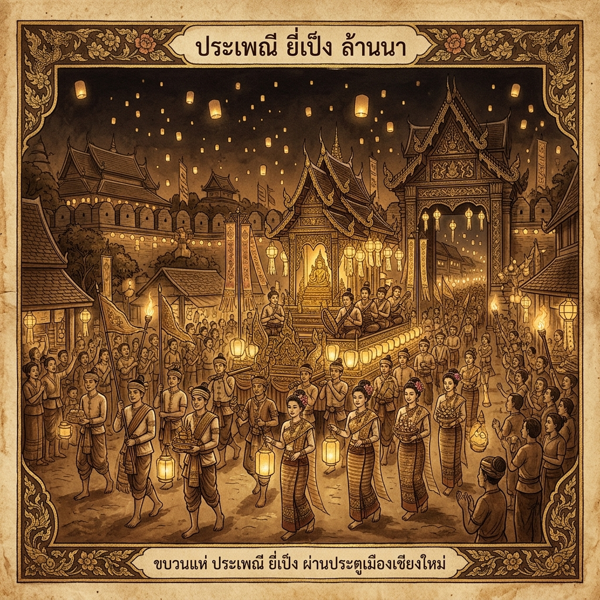
"ขบวนแห่สะเปาล้านนา" ขบวนรถกระทงที่ตกแต่งอย่างวิจิตรสวยงามตระการตา แห่ผ่านถนนท่าแพแสดงถึงพลังแห่งศิลปะและศรัทธาของชาวเชียงใหม่
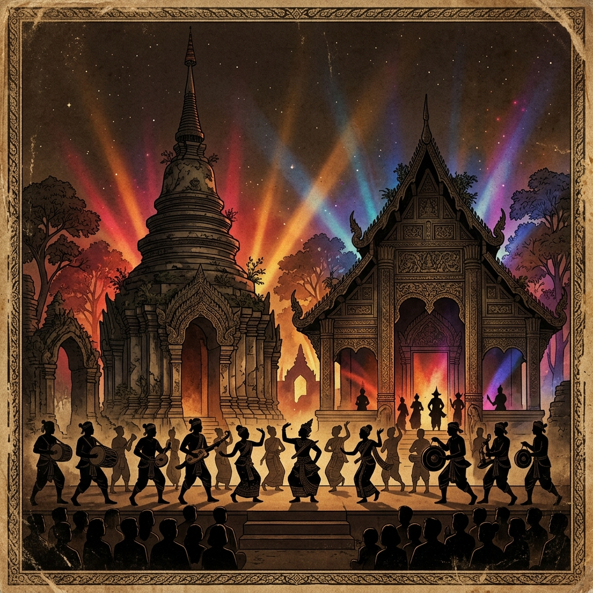
การแสดงสื่อผสมอลังการที่เล่าเรื่องราวตำนานยี่เป็งและประวัติศาสตร์เชียงใหม่ผ่านเทคนิคสมัยใหม่ ผสานความเชื่อดั้งเดิมเข้ากับแสงสีตระการตา
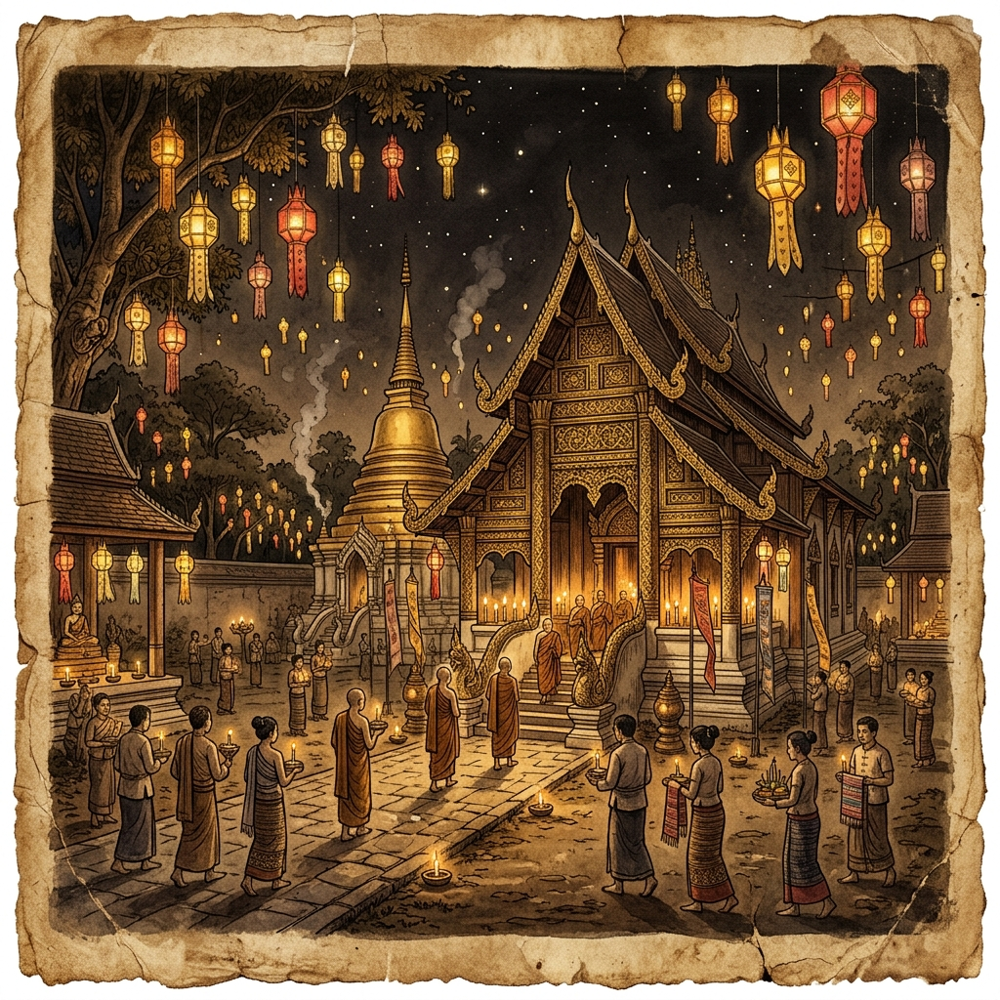
สัมผัสความสงบและชมความงามของสถาปัตยกรรมล้านนาในวัดค่ำคืนที่ประดับตกแต่งด้วยโคมล้านนา (โคมแขวน) หลากสีสันสวยงาม
มารยาทและข้อควรรู้
การปล่อยโคมในเชียงใหม่มีกฎระเบียบที่เคร่งครัดเรื่องเวลาและพื้นที่ เพื่อความปลอดภัยทางการบิน โปรดตรวจสอบเขตพื้นที่อนุญาตก่อนทำการปล่อย
เมื่อเข้าสู่วัดหรือสถานที่ศักดิ์สิทธิ์ ควรแต่งกายสุภาพเรียบร้อย ปกปิดไหล่และเข่า เพื่อเป็นการเคารพสถานที่และประเพณีอันดีงามของล้านนา
ยี่เป็งเป็นเทศกาลแห่งศรัทธา โปรดร่วมกิจกรรมด้วยความสำรวม ไม่รบกวนผู้อื่นขณะปฏิบัติพิธีกรรม และให้ความสำคัญกับแก่นแท้ของประเพณี
ถ่ายภาพโดยไม่ใช้แฟลชเพื่อรักษาบรรยากาศอันศักดิ์สิทธิ์ และควรขออนุญาตก่อนถ่ายภาพบุคคลในพิธีกรรม เพื่อให้ได้ภาพที่สื่อถึงอารมณ์ที่แท้จริง
แกลเลอรี / บรรยากาศ
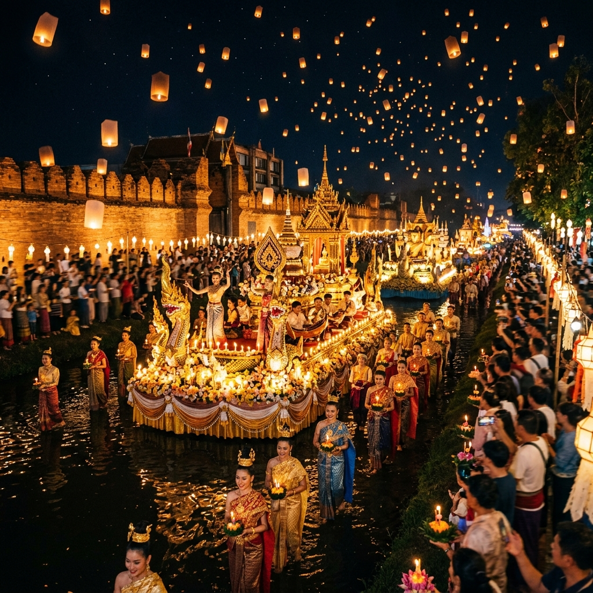
PLAY CINEMATIC CLIP